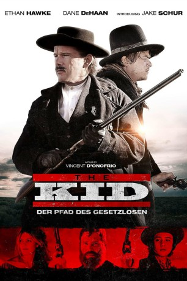

#11722 The Kid - Pfad der Gesetzlosen
Alternativ: The Kid (Englischer Titel)
 
 IMDB-Wertung: 5.9 / 10
IMDB-Wertung: 5.9 / 10  Metascore: 51
Metascore: 51 
Ein kleiner Junge ist hin- und hergerissen zwischen seiner Bewunderung für die Revolverhelden des wilden Westens und seinem Bedürfnis, die eigene Familie zu retten. Sein eigener Onkel hat seinen Vater getötet und seine Schwester als Prostituierte verkauft. Der Junge kann sich selbst retten und sucht den berüchtigten Billy the Kid auf (Dane DeHaan), um diesen zu bitten, seine Schwester zu befreien. Doch schnell muss er lernen, dass hinter seiner verklärten Idee des glorreichen Helden ein selbstsüchtiger, achtloser Ganove steckt. Einen wahren Helden findet der Kleine schließlich in Sheriff Pat Garett (Ethan Hawke)...
Jahr: 2019
Dauer: 99 Minuten
FSK: 16
Land: USA Studio: LionsgateTonspuren: DTS - ,
Untertitel: Deutsch,
Auflösung: 1080p (1920x808) Größe: 5058 MB
Genre: Drama, Western, Biographie
Regisseur: Vincent D'Onofrio
Drehbuch: Andrew Lanham
Soundtrack: Latham Gaines, Shelby Gaines
Darsteller:
- Jake Schur als Rio Cutler
- Leila George als Sara Cutler
 Chris Pratt als Grant Cutler
Chris Pratt als Grant Cutler Dane DeHaan als Billy 'The Kid' Bonney
Dane DeHaan als Billy 'The Kid' Bonney Ethan Hawke als Sheriff Pat Garrett
Ethan Hawke als Sheriff Pat Garrett- Charlie Chappell als Billy Wilson
- Clint Obenchain als Tom Pickett
- Chris Bylsma als Charlie Bowdre
- Chad Dashnaw als Dave Rudabaugh
- Ben Dickey als Jim East
 Tait Fletcher als Bill Cutler
Tait Fletcher als Bill Cutler- Hawk D'Onofrio als Oran Moler
- Diana Navarrete als Manuela
 Vincent D'Onofrio als Sheriff Romero
Vincent D'Onofrio als Sheriff Romero- David Devereaux als First Reporter
 Rachel Singer als Cricket (a.k.a. Whore)
Rachel Singer als Cricket (a.k.a. Whore) Jenny Gabrielle als Mirabel
Jenny Gabrielle als Mirabel Howard Ferguson Jr. als Tall Man
Howard Ferguson Jr. als Tall Man- Santo Militello als Butcher
 Keith Jardine als Paul Jankowski
Keith Jardine als Paul Jankowski- Dillon D. Jordan als Second Guard
 Adam Baldwin als Bob Olinger
Adam Baldwin als Bob Olinger- Joseph Santos als James Bell
- Leslie Fleming-Mitchell als Bank Clerk
 Joe Berryman als Older Doctor
Joe Berryman als Older Doctor Douglas Bennett als Gauss
Douglas Bennett als Gauss- Efrain Villa als Mexican Worker
 Stafford Douglas als John Poe
Stafford Douglas als John Poe- Merritt C. Glover als Singing Painted Lady
- MorningStar Angeline als Young Whore
 Jacob Browne als Bartender
Jacob Browne als Bartender- David Christian Welborn als Father
- Carlos Amorin als Young Mob Leader
- Claudia Baca-Moore als Grandma Maxwell (uncredited)
- Cynthia Casaus als Townsperson (uncredited)
- Rose Cordova als Mother Maxwell (uncredited)
 Rachel de la Torre als Hispanic Townswoman (uncredited)
Rachel de la Torre als Hispanic Townswoman (uncredited)- Angela Marie Duncan als Old Woman (uncredited)
- Shannon Henderson Herrera als Brothel Woman #2 (uncredited)
- Rip Lowe als Bordello Patron (uncredited)
- Sarah Murrey als Townsperson (uncredited)
- Randy Outzen als The Cook (uncredited)
 Michael Neal Powell als Store Clerk (uncredited)
Michael Neal Powell als Store Clerk (uncredited)- Paul Rosenblum als Bartender (uncredited)
 J. Nathan Simmons als Townsperson (uncredited)
J. Nathan Simmons als Townsperson (uncredited)- Rick Tadra als Santa Fe Sheriff (uncredited)
- Rafael Velasquez als Santa Fe Policeman (uncredited)
- David White als Townsperson (uncredited)
- Matthew R. Williams als Bartender (uncredited)
- Samantha Zajarias als Paulita Maxwell
Datei: X:\NEU\Kid - Pfad der Gesetzlosen, The (2019, FSK16, 1920x808).mkv seit 14.09.2019
 Es gibt insgesamt 187 Filme in der Gruppe 'NEU'
Es gibt insgesamt 187 Filme in der Gruppe 'NEU'